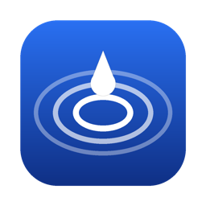

All of your Drive. None of your disk.
Your whole Google Drive as a disk on your Mac. Files open in seconds and stream as you use them, so a 50 GB video doesn't need 50 GB free. Free and open source.
Get it on GitHub PrivacyMy Drive and Shared with me at ~/RippleDrive, in the sidebar like any disk.
Only the parts you read are fetched. The cache stays under 2 GB and clears itself.
Sleep, crash or Wi-Fi drop: it carries on from the last byte, then checks the MD5.
Progress, pause and cancel, a drop tile, ⌃⌥F search and one-click share links.
Your own Google client ID, so your own quota. No server, no account, no tracking.
MIT licensed. Built on rclone and fuse-t, for Apple Silicon Macs on macOS 26+.
zsh install.sh inside it.